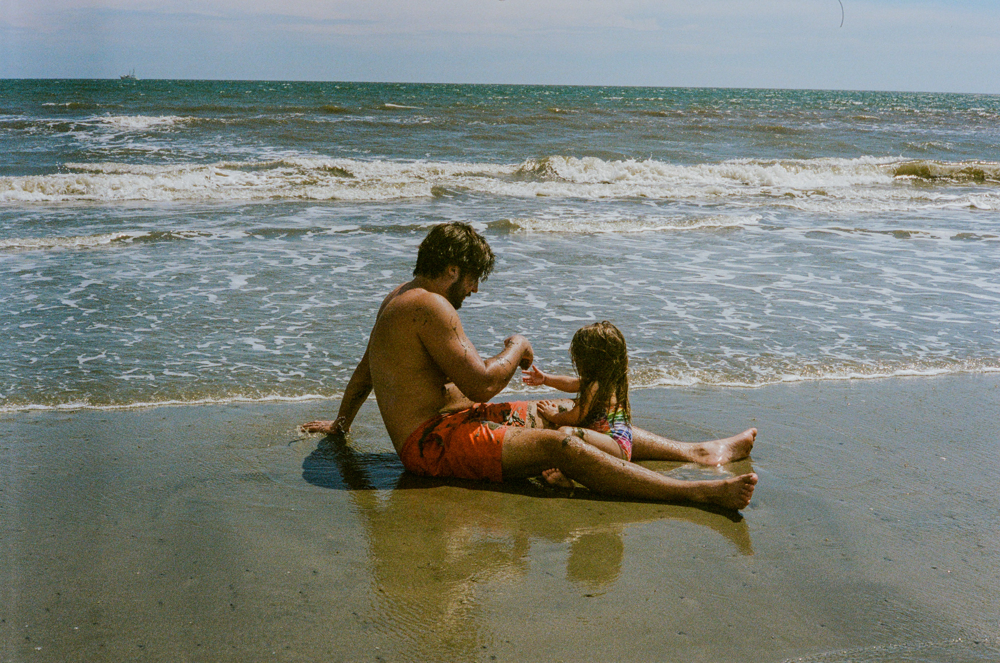
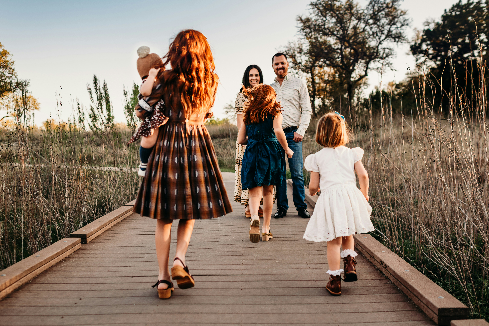
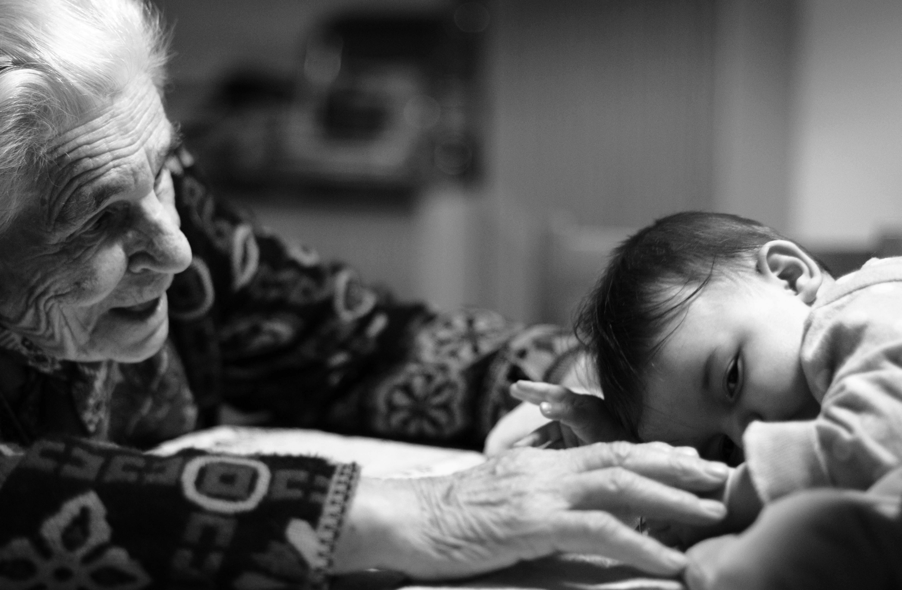
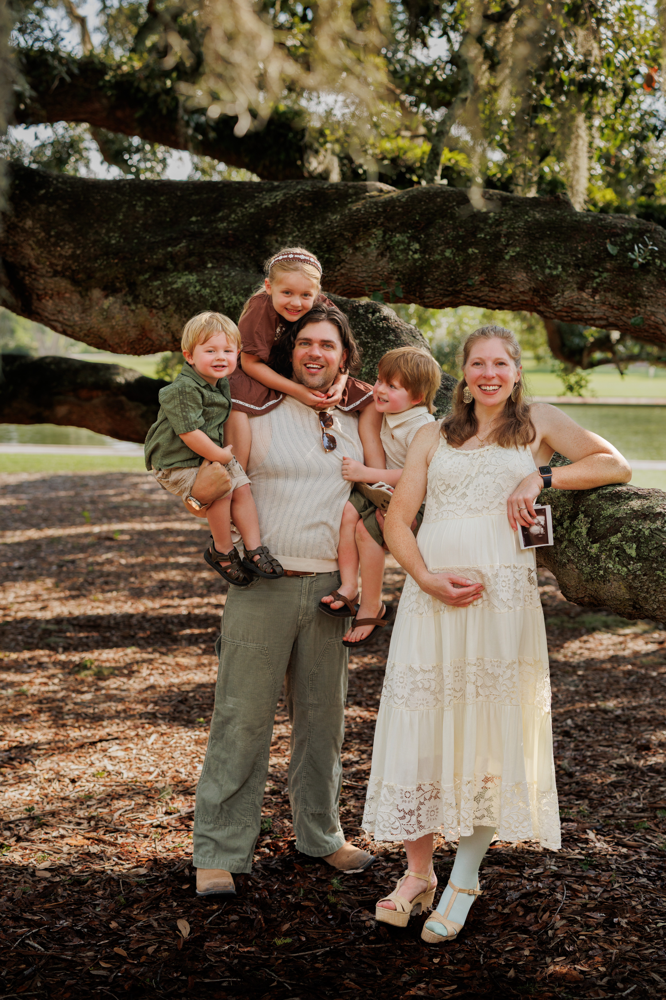
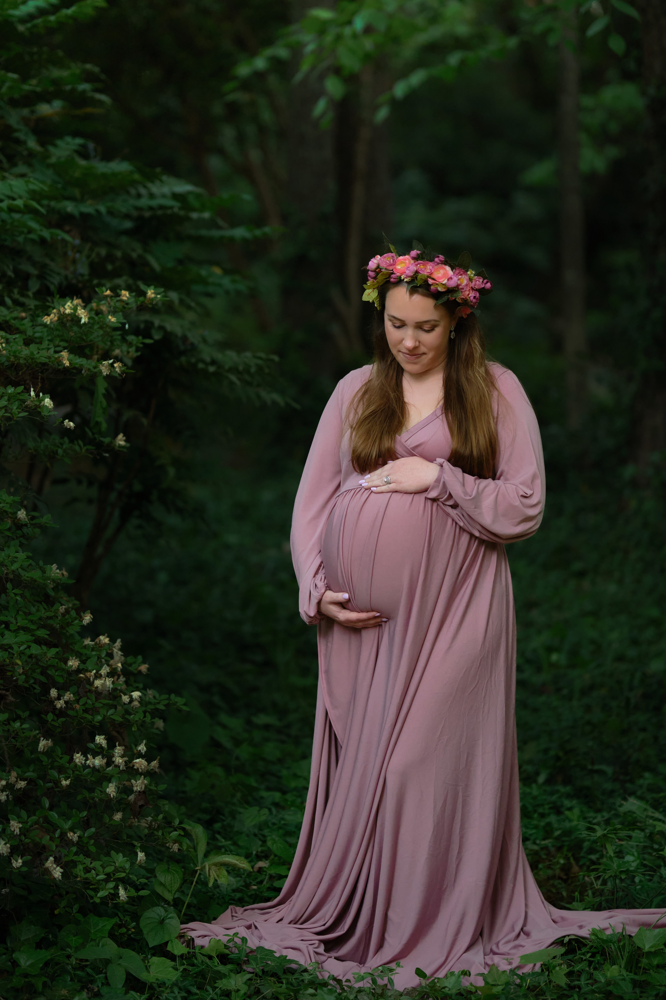
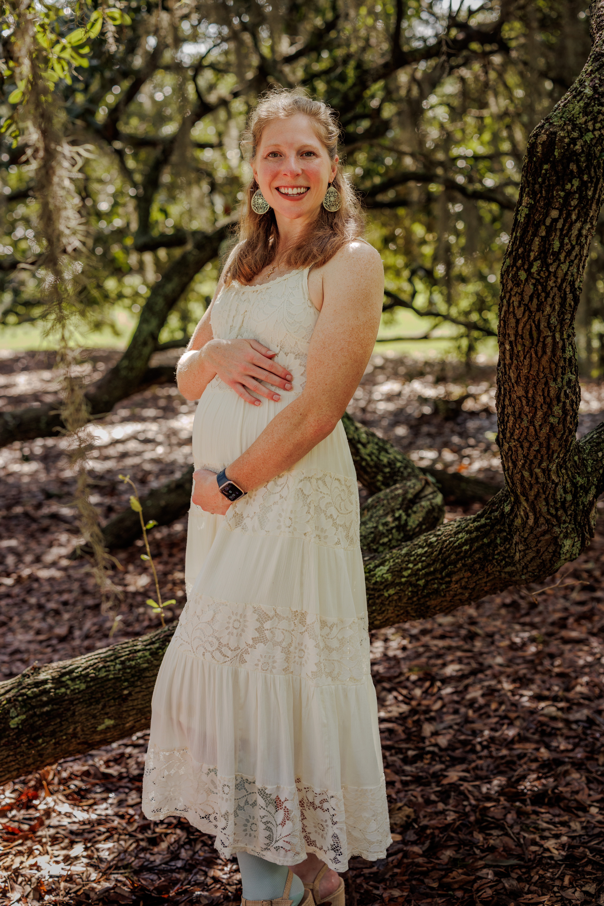
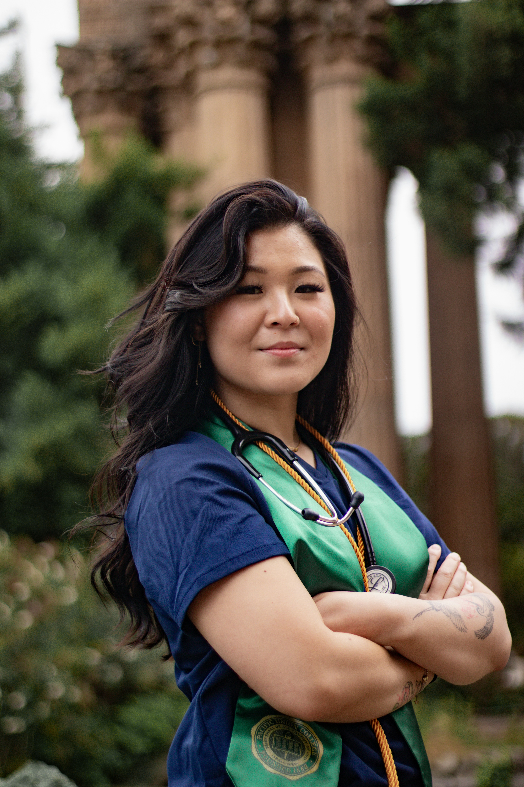

People and Portraits
Graduation Photos
Celebrate this milestone with portraits that feel confident, natural, and true to you. Sessions include classic cap-and-gown photos plus relaxed, candid moments, at your campus or a favorite location around Charleston.
Family Portraits
Real connection looks different for every family. Sessions blend lightly guided portraits with candid moments, so your gallery feels polished and still looks like you, whether that's a classic family photo or kids mid-giggle.




Maternity Photos
This season goes quickly, and it's worth remembering. Maternity sessions are relaxed and comfortable, focused on the glow, the anticipation, and the people you're sharing it with, at a favorite outdoor spot or in the comfort of home.




Professional Headshots
A good headshot should look like you on your best day. Sessions use natural or off-camera lighting and a bit of direction to create photos that feel confident and approachable, ready for LinkedIn, your website, or your next opportunity.
